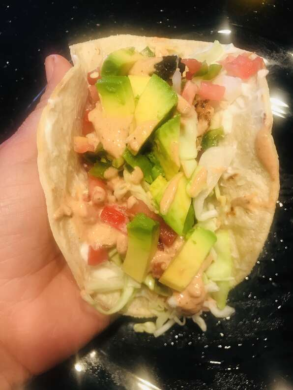

Grilled Fish Tacos with Chipotle-Lime Dressing

I came up with this recipe when I couldn't find good directions for grilled fish tacos. I liked the chipotle-lime combination in a dip I once tried so I imitated it here. Choose toppings to suit your taste, or include typical accompaniments such as salsa fresca, cabbage, a squeeze of lime juice, and chopped cilantro.
Ingredients
- ¼ cup extra virgin olive oil
- 2 tablespoons distilled white vinegar
- 2 tablespoons fresh lime juice
- 2 teaspoons lime zest
- 1½ teaspoons honey
- 2 cloves garlic, minced
- ½ teaspoon cumin
- ½ teaspoon chili powder
- 1 teaspoon seafood seasoning, such as Old Bay™
- ½ teaspoon ground black pepper
- 1 teaspoon hot pepper sauce, or to taste
- 1 pound tilapia fillets, cut into chunks
Steps
- To make the marinade, whisk together the olive oil, vinegar, lime juice, lime zest, honey, garlic, cumin, chili powder, seafood seasoning, black pepper, and hot sauce in a bowl until blended. Place the tilapia in a shallow dish, and pour the marinade over the fish. Cover, and refrigerate 6 to 8 hours.
- To make the dressing, combine the sour cream and adobo sauce in a bowl. Stir in the lime juice, lime zest, cumin, chili powder, seafood seasoning. Add salt, and pepper in desired amounts. Cover, and refrigerate until needed.
- Preheat an outdoor grill for high heat and lightly oil grate. Set grate 4 inches from the heat.
- Remove fish from marinade, drain off any excess and discard marinade. Grill fish pieces until easily flaked with a fork, turning once, about 9 minutes.
- Assemble tacos by placing fish pieces in the center of tortillas with desired amounts of tomatoes, cilantro, and cabbage; drizzle with dressing. To serve, roll up tortillas around fillings, and garnish with lime wedges.